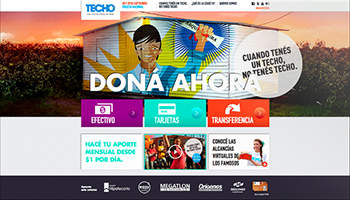
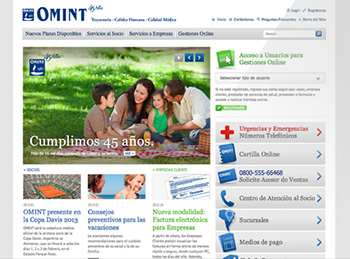

Mercado Libre
E-commerce
Currently working for mercadolibre.com, South America's biggest e-commerce platfom. I'm in re-designing the whole css arquitecture in the company with a modular, maintainable, mobile-first perspective.
Also teaching people there about sass, efficient selectors, performant animations and efficient dry coding.
2014 - Mercado Libre
Preguntados*
HTML5 Game
*Known as Trivia Crack in english.
I was part of a 3 members team developing the front-end of the game for the web. The challenge, as all games, was to care of animations that should perform at a constant 60fps.
For the technology stack, we used Grunt, Backbone and Less as the css preprocessor.
This trivia game became VERY popular in the region. Currently the webapp is used in a very well known TV show in Argentina.
2014 - Etermax
Apalabrados* 2.0
HTML5 Game
*Known as Aworded in english.
Was part of a 2 memebers team. The work consisted of a complete refactor of the code with a new stack of technology focusing on maintainability. Also new features were added with a complete re-design of the app.
The game consits in a async online crossword puzzle. It is very successful in Spain.
2013 - Etermax
Bingo Crack
HTML5 Game
Developed the whole UI of the game, including all animations. First made all of them with the greenSock JS animation library, but they weren't performing as fluid as desired, so I migrated them to CSS3 using hardware accelerated animations. Compared performance of each one of them cross-browser using developer tools and fps meters. In conclusion made the perfect blend between greenSock and CSS3 animations.
2013 - Etermax
One Ocean
Website
Involved in the whole UI design and development. For this real estate project I designed the FlexyPics UI component as it required a very visual and original responsive and adaptive layout.
Also led the whole front-end development of the project.
2013 - BridgerConway
YPF
Website
Led the front-end team of three people in the development of the “YPF” site (petrochemical company, biggest in Argentina), and worked in conjunction with Accenture in the implementation of it in Visual Studio.
2012 - BridgerConway
Guía YPF
Web app
Led the project and programmed the entire front-end “Guía YPF“ site.
The main feature are the maps using the Google Maps API 3 which showed several layers of information of locations and routes from all around Argentina for travellers.
2012 - BridgerConway
Iberostar
Website / Booking platform
Was part of a team in the front-end development of the booking system of this very well known international hotels brand.
This was a large project where many people were involved. The back-end was made by a company in Spain.
2011 - BridgerConway
Consultatio
Website
Made the entire front-end develovment for this site.
2012 - BridgerConway

TECHO para mi país
Website
Front-end development for the 2012 anual founds recollection of the Techo para mi país organization. The site was online for just one month during the anual recollection. Also helped designing the wireframes of the home page. The site was only online for one month during the anual recollection but you can see it hosted in my server here. Ad honorem work.
2012 - Juan Vanni
Oceana
Website
For this project I was only involved in the front-end development. The highlights are the Google Maps API3 Location viewer and the Floorplans visualizer with ajax functionaly.
2012 - BridgerConway
Historias
Website
For this very well known film studio here in Bueno Aires we designed a very original UI where you can navigate the studio's work with mouse movement. This horizontal layout (rather than vertical) was proposed to respect the movies widescreen film proportions. Another interesting feature is that the site was programed usig ajax for a more dynamic navigation.
Recently optimized ajax calls, improved the css code and made it more touch friendly.
2011 - Juan Vanni
INCAA
Web app
Currently wireframing and prototyping a web app for INCAA.
INCAA is the national film institute, the idea is to make a web and mobile app where everyone may watch online any film in the history of argentinian film making. Also to re-juvenate the brand and bring it closer to a younger audience.
The idea also is that the app will work s a social network itself, where users can register, have a profile, follow one another, have lists with favorites, pending to watch and share them with other users.
I also proposed that the institute should encourage famouse actors / actress and directors to be users registered in the site. If they have lists of favorites many other users will tend to watch the movies of their favorite actors or directors.
Project Cancelled - Juan Vanni

Omint
Website
Programmed most of the front-end of the site of this well-known health insurance company in Argentina. I and also involved in it’s integration in DotNetNuke.
2010 - BridgerConway